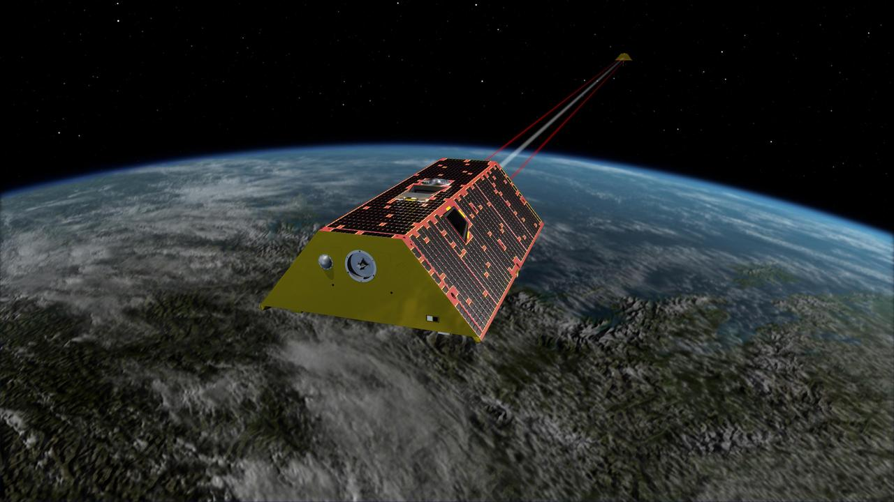

Elastomeric honeycomb lattices
I printed 144 specimens and tested them under slow compression and impact at Maryland’s Composites Research Laboratory.
Read about the testsAerospace engineering
I study aerospace engineering at the University of Maryland. My work spans impact testing, flight software, and orbital dynamics.
Explore my work
I printed 144 specimens and tested them under slow compression and impact at Maryland’s Composites Research Laboratory.
Read about the testsAt the Machine Learning for Dynamical Systems Lab, I built a dashboard to explore how modeled gravitational acceleration varies across a globe.
Read the gravity model notesI built a Python simulator that plots a three-dimensional trajectory from orbital elements or a satellite state. Starting with the two-body problem, I added Earth’s J2 oblateness term and atmospheric drag.
On Maryland’s IREC competition team, I work on state estimation and embedded flight software. I evaluate attitude estimates with Monte Carlo simulations and hardware-in-the-loop playback.
I led the electrical side of an eight-person team building an automated obstacle-course vehicle on a $300 budget. I wired the sensors, motors, and power system, wrote the Arduino control code, and printed enclosures for the electronics.
I’m pursuing a B.S. in Aerospace Engineering at the University of Maryland, College Park, with graduation expected in May 2027. My coursework includes orbital dynamics, aerospace structures, control systems, and flight software.
Connect on LinkedIn